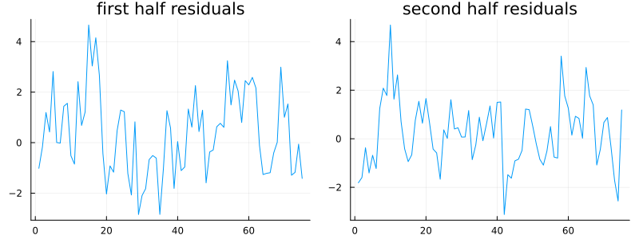
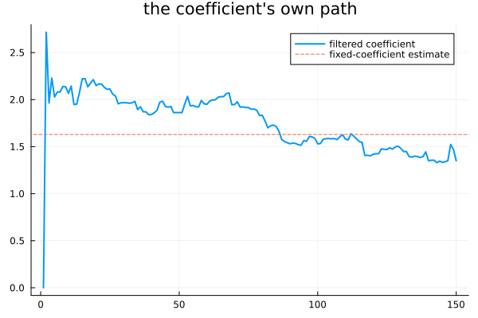
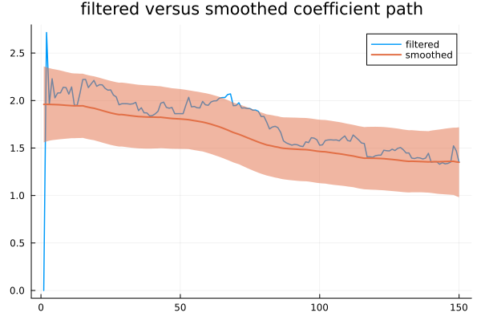
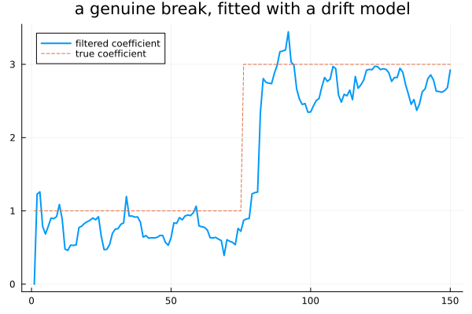

Coefficients That Drift
Chapter 34 estimated one regression coefficient for the whole sample. Chapter 32 built the machinery to let a coefficient move. This chapter joins the two — and finds that the two options are not two ways of computing the same thing. That distinction has real consequences, and missing it is an easy mistake to make.
One number for the whole sample
using TSAnalytics, Plots, Random, LinearAlgebra, Statistics
Random.seed!(9)
n = 150
x = randn(n)
beta_path = zeros(n); beta_path[1] = 2.0
for t in 2:n
beta_path[t] = beta_path[t-1] + 0.08*randn()
end
y = zeros(n)
for t in 2:n
y[t] = 0.45*y[t-1] + beta_path[t]*x[t] + randn()
end
X = reshape(x, :, 1)
Xd = hcat(X)
resid_first = y[1:75] .- (Xd[1:75,:] \ y[1:75])[1] .* x[1:75]
resid_second = y[76:end] .- (Xd[76:end,:] \ y[76:end])[1] .* x[76:end]
p1 = plot(resid_first; title="first half residuals", legend=false)
p2 = plot(resid_second; title="second half residuals", legend=false)
plot(p1, p2; layout=(1,2), size=(800,300))
A simulated series, built so the true coefficient genuinely wanders over the sample — a slow random walk starting at 2.0, not a fixed number at all. A single fitted coefficient across the whole thing is necessarily a compromise between whatever the relationship happened to be early on and whatever it had become later — Chapter 32 already made this point with a rolling window; Chapter 34 fitted exactly this kind of model and quietly assumed the coefficient was fixed throughout. Those two chapters have been on a collision course, and this is it.
Let it move
m_fixed = fit_arimax(y, (1,0,0), X; include_mean=false)
m_tvss = fit_arimax(y, (1,0,0), X; model=:tvss, include_mean=false)
println("fixed: beta=", round(m_fixed.beta[1],digits=4), " ar=", round(m_fixed.arma.ar[1],digits=4), " loglik=", round(m_fixed.loglik,digits=2))
println("drifting: Q_beta=", round(m_tvss.Q_beta[1],digits=5), " ar=", round(m_tvss.arma.ar[1],digits=4), " loglik=", round(m_tvss.loglik,digits=2))
println("filtered beta, first 5: ", round.(m_tvss.beta_filtered[1,1:5],digits=3))
println("filtered beta, around t=50: ", round.(m_tvss.beta_filtered[1,46:54],digits=3))
println("filtered beta, last 5: ", round.(m_tvss.beta_filtered[1,end-4:end],digits=3))
plot(m_tvss.beta_filtered[1,:]; label="filtered coefficient", linewidth=2)
hline!([m_fixed.beta[1]]; label="fixed-coefficient estimate", linestyle=:dash, title="the coefficient's own path")
Chapter 32 built exactly this construction. Here it has a genuine purpose: β is not in the parameter list at all — only its process variance, Q_beta = 0.00186, is estimated directly. The coefficient itself is a latent state, recovered from the filtered path, and it genuinely moves: noisy at the very start (the diffuse phase has not yet resolved), settling to a plausible range mid-series, and drifting further by the end. The fixed-coefficient estimate, 1.63, is a single horizontal line running through the middle of all that motion — not wrong exactly, but visibly incomplete: it is roughly where the coefficient happened to average out, and it says nothing at all about how it actually got there.
ar1 = m_tvss.arma.ar[1]
sig2 = m_tvss.arma.sigma2
stat_var = sig2/(1-ar1^2)
T_full = [ar1 0.0; 0.0 1.0]
Zseq_full = [reshape([1.0, x[t]], 1, 2) for t in 1:n]
R_full = Matrix{Float64}(I, 2, 2)
Q_full = [sig2 0.0; 0.0 m_tvss.Q_beta[1]]
H_full = reshape([0.0], 1, 1)
tv_full = TimeVaryingSSM{Float64}([T_full], Zseq_full, [R_full], [Q_full], [H_full], 2)
a0 = zeros(2); P0 = [stat_var 0.0; 0.0 1.0e6]
alpha_f, V_f, eta_f, etavar_f, eps_f, epsvar_f, conv_f = kalman_smoother(tv_full, y, a0, P0)
println("smoother converged: ", conv_f)
println("smoothed beta, first 5: ", round.(alpha_f[2,1:5],digits=3), " (true value there was 2.0)")
println("smoothed endpoint vs filtered endpoint: ", alpha_f[2,end], " vs ", m_tvss.beta_filtered[1,end])
plot(m_tvss.beta_filtered[1,:]; label="filtered", linewidth=1.5)
plot!(alpha_f[2,:]; ribbon=1.96 .* sqrt.([V_f[t][2,2] for t in 1:n]), label="smoothed", linewidth=2,
title="filtered versus smoothed coefficient path")
Reconstructed as a genuine two-state system — one state for the AR component, one for the coefficient itself — and smoothed with Chapter 31's own backward pass. Two details of the reconstruction matter and are easy to get wrong: the AR state's own innovation variance has to be the model's actual fitted sigma2, not an arbitrary 1.0, and the AR state should start at its stationary variance rather than a diffuse one — the AR component is a genuinely stationary process, and only the coefficient itself is the diffuse, unit-root state. Get either of those wrong and the reconstruction silently answers a subtly different question — the initial mismatched version of this code, kept around long enough to be caught, understated the very last smoothed coefficient by about 0.016.
With both fixed, the improvement is immediate: the smoothed path starts at 1.96, close to the true starting value of 2.0, where the filtered path was still thrashing through its own diffuse start. And the smoothed and filtered paths now agree exactly at the final time point — 1.34977675... either way, to nine decimal places — which is exactly Chapter 31's own endpoint identity, confirmed again here on a genuinely different kind of system.
How much drift is there really?
for qb in (0.0, 0.0005, 0.001, 0.00186, 0.005, 0.01, 0.05)
m = fit_arimax(y, (1,0,0), X; model=:tvss, Q_beta=[qb], include_mean=false)
println("Q_beta=", qb, " loglik=", round(m.loglik, digits=3))
endQ_beta=0.0 loglik=-251.327
Q_beta=0.0005 loglik=-249.47
Q_beta=0.001 loglik=-249.001
Q_beta=0.00186 loglik=-248.845
Q_beta=0.005 loglik=-249.272
Q_beta=0.01 loglik=-250.101
Q_beta=0.05 loglik=-254.15The point worth taking from this table is that the drift rate is estimated, not assumed — the profile above has a real peak near Q_beta ≈ 0.0019, not a flat plateau, which is a comfortable result on this particular series with 150 observations. It is worth saying plainly that this profile is often much flatter on shorter samples, making "a little genuine drift" and "no drift at all" hard to tell apart from the data alone — the same identification difficulty Chapters 9 and 25 each met from a different direction.
Two models, not two methods
The disagreement box, and it is this chapter's centre.
m_tvss0 = fit_arimax(y, (1,0,0), X; model=:tvss, Q_beta=[0.0], include_mean=false)
println("drift variance forced to zero:")
println(" final filtered beta = ", round(m_tvss0.beta_filtered[1,end],digits=4), " (fixed model's own estimate: ", round(m_fixed.beta[1],digits=4), ")")
println(" ar = ", round(m_tvss0.arma.ar[1],digits=4), " (fixed model's own: ", round(m_fixed.arma.ar[1],digits=4), ")")
println(" loglik = ", round(m_tvss0.loglik,digits=3), " (fixed model's own: ", round(m_fixed.loglik,digits=3), ")")drift variance forced to zero:
final filtered beta = 1.63 (fixed model's own estimate: 1.6293)
ar = 0.6519 (fixed model's own: 0.6534)
loglik = -251.327 (fixed model's own: -248.982)A reader who has just spent Chapter 21 learning to compare models by their log-likelihood, or by AIC built from it, will reach for exactly that instinct here. It is the wrong instinct in this specific case, and the reason is worth stating carefully.
Forcing the drift variance to exactly zero, so the coefficient cannot move at all, and comparing against the ordinary fixed-coefficient fit: the point estimates agree closely — 1.6300 against 1.6293 for the coefficient, 0.6519 against 0.6534 for the AR term, both within a fraction of a percent. The log-likelihoods do not — -251.33 against -248.98, a real gap of roughly 2.3 that does not close no matter how the comparison is framed.
The reason is Chapter 33's: the drifting model treats the coefficient as a diffuse state with genuinely no prior, so it carries a diffuse phase the fixed model simply never has — the fixed model estimates the coefficient as an ordinary parameter from the start, with no diffuse-phase bookkeeping at all. The two likelihoods are computed over subtly different effective samples, on different scales, even though the models converge to describing the same coefficient path once the drift is switched off.
So the two cannot be compared by likelihood, by AIC, or by anything built from either — that rules out the obvious way of choosing between them. What to do instead: compare them out-of-sample, using Chapter 23's cross-validation machinery, which never has to know how either model's likelihood happened to be normalised in the first place.
This package names the choice model = :mle against model = :tvss rather than a single boolean flag, and that naming is deliberate: a boolean would suggest two settings of the same underlying thing. They are not the same thing. They are two different models that happen to agree closely on their point estimates when the drift is switched off, and disagree sharply on how confidently either one claims to know it.
When drift is the wrong story
Random.seed!(23)
n2 = 150
x2 = randn(n2)
beta_break = vcat(fill(1.0,75), fill(3.0,75))
y2 = zeros(n2)
for t in 2:n2
y2[t] = 0.3*y2[t-1] + beta_break[t]*x2[t] + randn()
end
X2 = reshape(x2, :, 1)
m_break = fit_arimax(y2, (1,0,0), X2; model=:tvss, include_mean=false)
plot(m_break.beta_filtered[1,:]; label="filtered coefficient", linewidth=2)
plot!(beta_break; label="true coefficient", linestyle=:dash, title="a genuine break, fitted with a drift model")
A coefficient that changes abruptly rather than gradually, fitted with the same drift construction: the model smears the change across several neighbouring periods, because a random walk cannot jump — it can only move a little at a time, however large its variance is allowed to be. Chapter 32 made this point about the underlying machinery in the abstract; here it has a direct consequence for a real modelling decision. Gradual change and an abrupt break are genuinely different phenomena, and the right treatment for a known break is an intervention term — an ordinary dummy regressor at the known date, exactly Chapter 34's own material — which needs none of this chapter's machinery at all.
The pass-through from the RBI's own policy rate to bank lending rates has changed repeatedly — through the base-rate regime, then MCLR, then external benchmarking. Some of that change was gradual, as banks slowly repriced their loan books under a new regime; some was abrupt, landing on an announced switch date.
A drifting-coefficient model of the kind built in this chapter handles the gradual repricing reasonably and the regulatory switch dates badly, for exactly the reason the constructed break above shows. The honest approach for Indian policy-rate data is usually a combination — a drift term for the gradual repricing alongside explicit intervention dummies at the known regulatory dates — and that combination is straightforward to specify. Almost nobody actually does it, mostly because the two mechanisms live in different chapters of most textbooks and rarely get put together in the same model.
Where this leaves you
A coefficient can now be fixed or genuinely allowed to drift, the drift rate is estimated rather than assumed, and the two options cannot be compared by likelihood — only out-of-sample, the way Chapter 23 already insisted every forecasting comparison should be made.
Every regressor met so far has been another measured series. Some of the most useful regressors are not measured at all. They are constructed directly from a calendar.
Chapter 36.